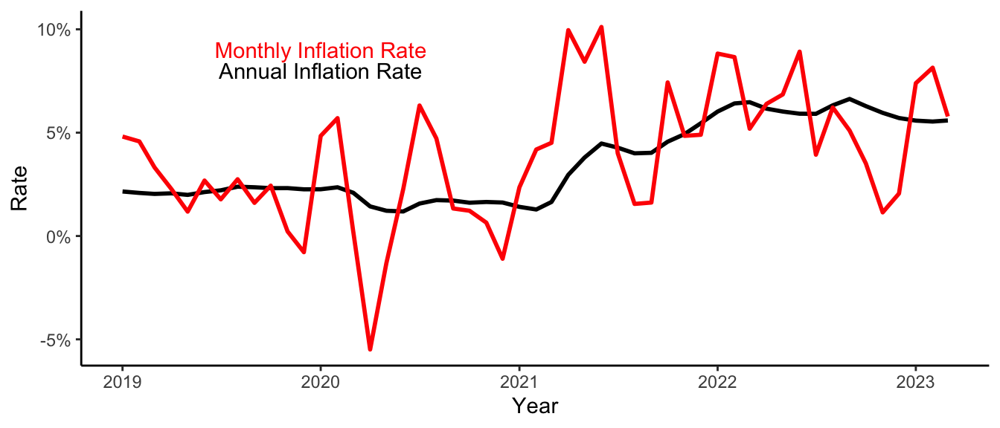

Summary
The economy is actually solid, particularly from the perspective of climbing gym owners. While there are always imbalances in the economy, they are larger right now than what we are used to dealing with. The major imbalance is between the labor market and the rest of the economy, with the labor market remaining much more constrained than almost any other sector, leading to increased competition for labor and higher wages. In the goods economy, inflation has largely cooled off, and there are increasing signs that some areas may already be exhibiting deflation. With the Federal Reserve and FDIC still playing whack-a-mole with bank failures, plus slowing inflation, we’ve probably seen the top in Federal Funds rates. However, I don’t expect to see short rates declining any time soon.
Labor Markets
The most important factor to understand in the labor market is the change in demographics of the US labor force. Baby Boomers were born from 1945 to 1965, meaning that the youngest baby boomers are 58, and the majority are over 65. The generation entering the labor force (Gen Z) are a relatively small generation, like generation X. Figure 1 shows the current shape of the population pyramid. The size of the Millenial (aged 25-44) generation is clear, as is the small size of Gen X (45-60). In this figure, Gen Z looks similar to Boomers, but this is exagerated by the fact that Baby Boomers are already at an age where death rates have increased. Figure 2 is the population pyramid as of 2013, and the relative size of the four generations is clear.
The beginning and end of generations is fuzzy. I used the dates from https://en.wikipedia.org/wiki/Millennials.
The reason that this change matters so much in this moment is visible from the labor force participation rates by age group. Figure 3 plots the age 25-54 group and the 55+ group, and the change before and after COVID is noticeable. Even as the 55+ group continues to grow in size relative to the 25-54 group due to demographics, its participation rate has fallen by 1.75% or so while the rate for ages 25-54 has returned to pre-COVID levels.
The key takeaway for the labor market are that the changes we’ve all experienced–more difficult hiring, higher wages, increased expectations from workers–are not temporary, this is the new normal. The pendulum between management and labor has swung toward labor. Even as we are seeing unemployment ticking up with a slowing economy, the shrinking workforce will keep higher unemployment rates from having much impact on actual labor tightness. Practically, this means that we all need to be spending more time on how to be better managers, and keeping our current employees happy and fulfilled.
The quits rate is my favorite single indicator of the strength of the labor market. It is the percentage of Americans who voluntarily quit their job each month. It does not include retirements. So in March of 2023 (the most recent data available) 2.5% of workers quit their job. While this is down from the peak of 3% hit in November 2021 and April 2022, it is still quite high compared to the previous 20 years.
While every generation complains about various characteristics of ‘the young’ particularly their work ethic, Generation Z has an advantage that labor is in short supply, so they can demand more out of their workplaces. Over time, we will see more and more firms and industries attempt to reduce their dependence on labor, such as kiosks in airports and McDonalds and firms either offshoring or virtualizing support. As we budget, wages will not be declining, and the more skilled the position, the higher the wage growth, though not at the levels that we’ve seen over the past three years.
Inflation

In 2022, the US had the highest rate of inflation since the early 80s. Lots of ink has been spilled on the causes of the increase in inflation, and my quick summation is that anyone who says there is a single cause or solution is probably trying to sell you something. In reality, the were many, overlapping and reinforcing factors:
- Large COVID-related stimulus payments to households
- COVID-related supply chain disruptions
- Slow recovery of home-building construction after the Great Recession leading to higher housing costs
- Aging & stagnant workforce
- Russia’s invasion of Ukraine
The combination of all of these led to much higher rates of price increases. In late ‘21 and early ’22, the prices rises were especially pronounced in goods and energy, but as ’22 wore on and moved into ’23, the inflation in those areas declined and services and housing became the primary drivers as the effects of Russia’s war on Ukraine were mitigated and supply chains normalized. While overall inflation has abated, it remains far above the Federal Reserve’s target rate of 2% and employment remains below the ’full employment’ rate of 4.5%. To the extent that the Fed believes that these two conditions will continue to exist 12 months from now, interest rates will continue to increase.
Interest Rates
In the 14 months since the first increase in the Federal Funds rate on 17 March 2022, the funds rate has gone from 0% to 5%--an incredible rate of increase not seen since early 1980. Meanwhile, the rates that we care about, the Prime Rate and the 10 Year Treasury rate, have increased from 3.25% to 8.25% and 2.14% to 3.38% (and above 4% at a few points). These two rates matter because they are what loans to small businesses are actually priced against. The ‘off the shelf’ rate for a 7a Small Business Loan is Prime+2.75%. SBA 504 or other long-term, fixed rate loans are typically priced against the 10 year Treasury Bond.
Short term interest rates have risen much more as the market has continued to believe that the high inflation rates, and therefore interest rates, are transitory. At present, the financial markets are predicting that the Federal Reserve will start cutting interest rates as soon as late 2023 due to a slowing economy and pressure on the banking system.
At this time, I think that this is overly optimistic and underestimates just how traumatized the Federal Reserve is about the level to which interest rates rose. Further, while the bank failures are also a problem for the Fed, minor reductions to interest rates will not staunch the issues, which are tied to poor risk management for the banks and weak supervision on the part of the Federal Reserve itself. The good news is that there should be little affect on main street borrowers as a result of the failures, as credit risk (i.e. risk from loans going bad) hasn’t played a part in any of the failures.
Financial markets currently believe that the Fed is finished increasing rates, and will start cutting rates in late 2023. I am much less certain (though if I were consistently smarter than financial markets, I wouldn’t live in Ohio). I don’t believe that the Fed will start cutting until 2024 unless we really start to fall into a sharp recession. Further, if weather is normal in Europe this winter, energy prices will increase rapidly–we were all very lucky that Europe had a very warm winter, which greatly reduced natural gas demand.
For those who utilize conventional (non-SBA) financing for projects, the way that interest rates vary over maturities right now means that loans that have 3 year lockouts will be even more advantageous on yields, as interest rates for loans under 3 years are higher than for those over 3 years. By guaranteeing the bank that you won’t refinance before them, they can more readily use those longer term rates.
Finally, a question that I’m hearing more and more is whether very low or zero interest rates will ever return. Ever is of course quite a long horizon, but I don’t expect to see 0% interest rates from the Federal Reserve, or 2.5% mortgages, again. The financial system is now having to work through the problems created by those policies, and they will take time. That isn’t to mean that 5% short term interest rates are the new normal. I simply would expect the Federal Reserve to treat short term interest rates in the 2-2.5% range as the bottom going forward, and also not to return to Quantitative Easing policies that drove long-term (and mortgage) interest rates so low. There are definitely problems with the course I think that they are on, too. Many of us find ourselves trapped by extremely low-interest rate mortgages, and that will hamper the ability of workers to relocate for better jobs. Work from home will offset some of that, but it is still a change.
Consumer Demand

Even as interest rates and unemployment have risen, consumer spending has remained robust, particularly in the upper income brackets. I don’t see this changing for at least the next 12 months. As you can see in the graph of Real Personal Disposable Income per capita, the figure remains higher than it was pre-COVID. And based on the distribution our indoor gyms’ demographics, the gap between pre-COVID and the present is larger than presented here, as incomes are right-skewed, i.e.~disproportionately skewed toward very high incomes. Higher interest rates mostly affect businesses, as consumers have limited amounts of variable interest rate debt. However, over the past 20 years, consumers have been very willing to refinance mortgages on appreciated homes in order to take equity out to finance consumer spending. Higher interest rates both make those newer mortgages much more expensive, and they have also slowed if not reversed the trend of higher housing prices that provided the equity.
The wildcard in consumer demand is employment. To date, most of the layoffs that have occurred have been in finance and technology, leading some to call the current situation “The Puffy Vest Recession.” These layoffs have not been only in Silicon Valley, as VC-backed startups around the country find financing more difficult to find, and are forced to trim headcount. If you operate in an area with high concentrations of affected industries, it is likely to be felt in demand. For most of the country, even a modest recession is unlikely to have significant effects on demand health & recreation services.
About Matt
Matthew C Roberts, PhD is Senior Grains and Oilseed Economist for Terrain. From 2001-2016, Roberts was Associate Professor in Agricultural, Environmental and Development Economics at The Ohio State University. From 2017 to 2022, Roberts was CEO of 5.Life, a climbing gym chain in Ohio and Pennsylvania, as well as a consultant and speaker to the grains industry. During this period, he also served as a Board Member for Sutton Bank, a $1.4Bn FinTech partner bank in Ohio.
Agriculture is harder than ever before, and to help producers navigate this new and ever-changing landscape, three leading Farm Credit Associations partnered to create Terrain-a team of market analysts and industry experts here to help our farmer-members find more success.